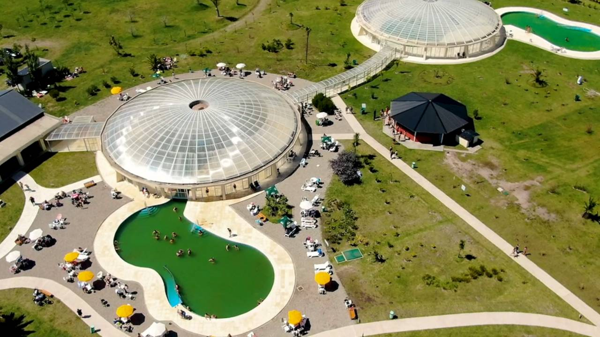
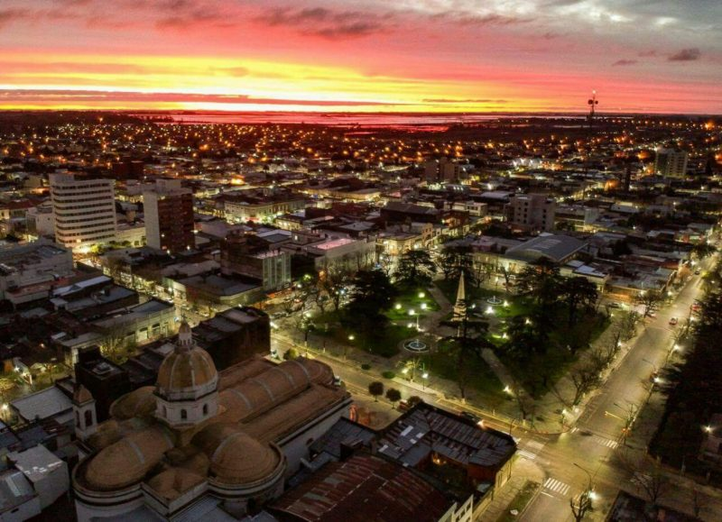
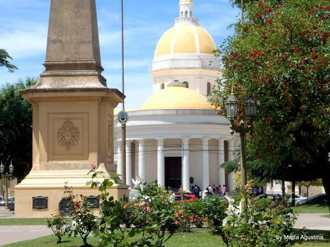
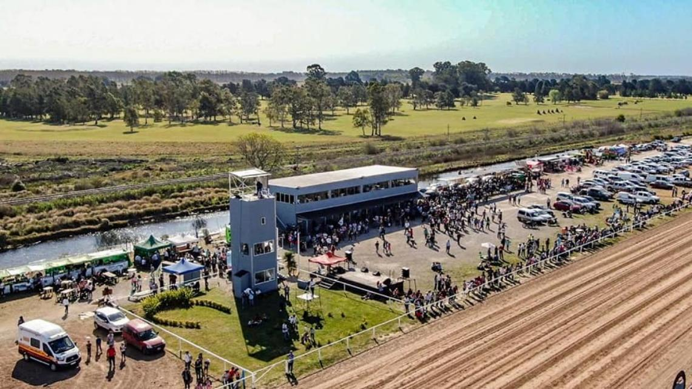
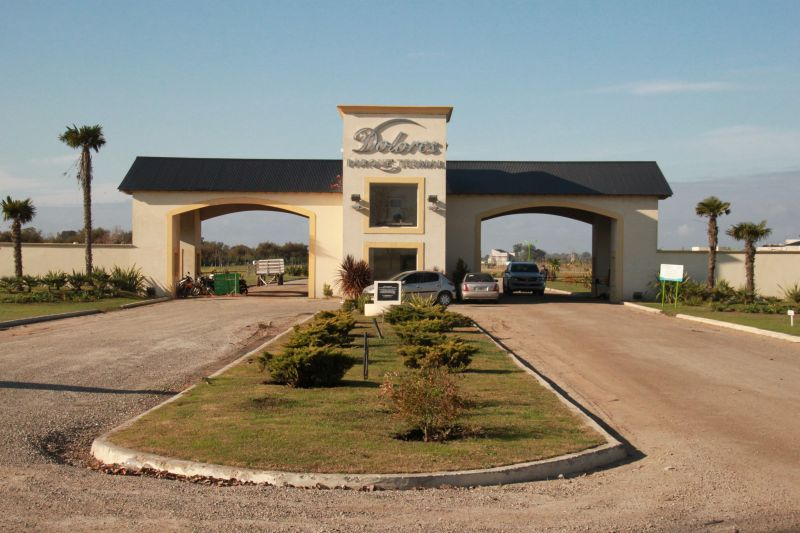
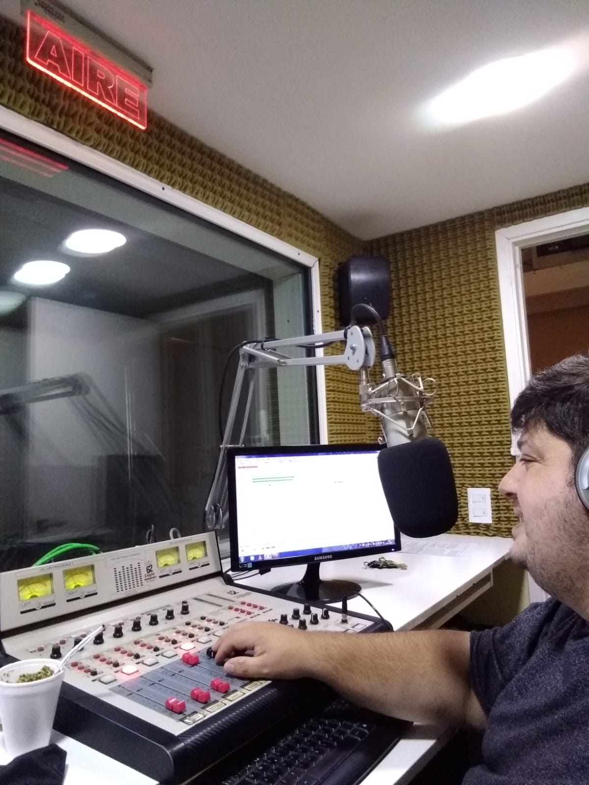

Bienvenidos a mi portafolio
Soy estudiante de tercer año de la Tecnicatura Superior en Diseño, Imagen y Sonido del Instituto Superior N.º 26 de Dolores.
Sobre mí
Hola, soy Alejandro Raponi
Soy estudiante de tercer año de la Tecnicatura Superior en Diseño, Imagen y Sonido del ISFDyT N.º 26 de Dolores, Buenos Aires.








Trabajo en Radio Municipal Dolores FM 100.1, donde participo en la producción, programación y comunicación radial.
Me apasionan el diseño gráfico, la producción audiovisual, la comunicación visual y la creación de contenidos digitales.
Mi objetivo es seguir desarrollándome profesionalmente y compartir mis proyectos y experiencias.
Mi experiencia en Radio
Radio Municipal Dolores FM 100.1
Desde octubre de 2014 formo parte de Radio Municipal Dolores FM 100.1, conocida como La Cien Dolores.
Mi experiencia comprende la producción de contenidos radiales, operación técnica, artística, comunicación y participación en diferentes propuestas de programación.
Producción y programación
Participo en la realización de contenidos informativos, musicales y culturales, combinando la comunicación radial con herramientas audiovisuales y digitales.
Talleres de Radio
También desarrollo actividades de formación a través de talleres de radio, donde trabajamos locución, entrevistas, producción de programas, lectura de noticias y operación técnica.
Considero que la radio es una herramienta fundamental para comunicar, aprender, compartir experiencias y fortalecer el vínculo con la comunidad.
Mis proyectos
DK Pintura Automotor
 Campaña publicitaria para una empresa
de pintura automotor de Dolores.
Diseño de piezas gráficas y
comunicación digital.
Campaña publicitaria para una empresa
de pintura automotor de Dolores.
Diseño de piezas gráficas y
comunicación digital.
Radio Municipal Dolores

Producción de programas radiales, separadores, entrevistas y contenidos para FM 100.1 La Cien Dolores.
Portal Digital ON AIR

Diseño de un portal digital, identidad visual, estructura web y contenidos multimedia.
Producción audiovisual

Realización de documentales, guiones, grabaciones y edición de imagen y sonido.
Contacto
Si querés conocer más sobre mis proyectos, propuestas audiovisuales, diseño gráfico, producción radial o comunicación digital, podés contactarme a través de los siguientes medios.
Dolores, Provincia de Buenos Aires, Argentina.